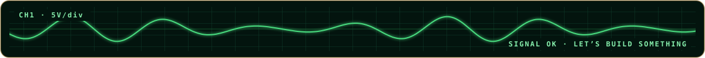
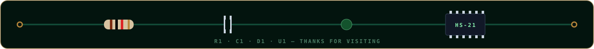
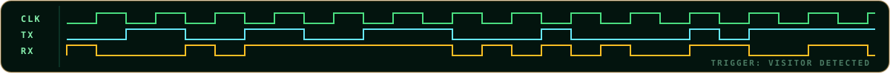
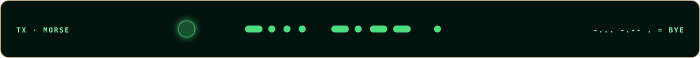

Footer options — on GitHub dark background
A oscilloscope

B components

C logic analyzer

D terminal

E seven segment

F battery
G dot matrix
H breadboard
I soldering

J morse

K pick and place

L cooling fan

M equalizer
N assemble and cool